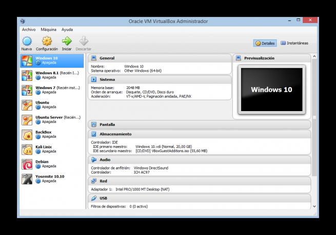
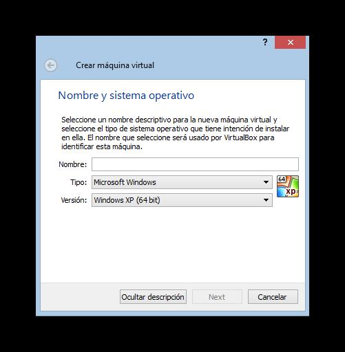
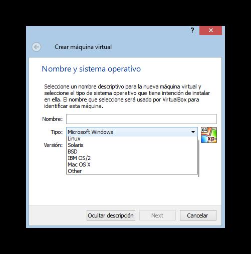
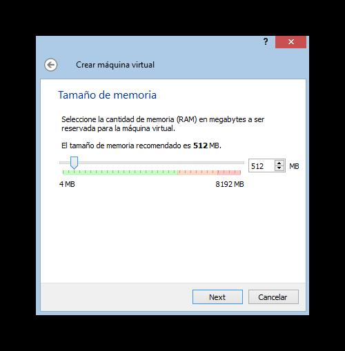
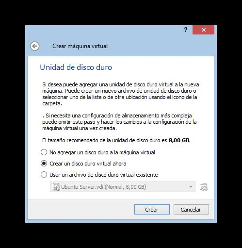
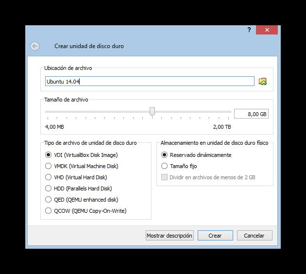

Instalación de una máquina virtual (Virtual Box)
Instalación de maquina virtual
Lo primero que debemos hacer, si no lo hemos hecho antes, es instalar esta herramienta en nuestro sistema. Para ello debemos descargar la versión correspondiente a nuestro sistema operativo desde su página web principal.
Una vez descargada la instalamos como un programa convencional, teniendo en cuenta que durante el proceso de instalación nos pedirá permiso para instalar unos controladores de red para conectar las máquinas virtuales a Internet.
El proceso de instalación es sencillo, rápido y libre de malware.
Creación de la máquina virtual
Una vez instalado el software en nuestro sistema lo ejecutamos y veremos una ventana similar a la siguiente.

Como podemos ver, la ventana principal se divide en 3 partes:
• La parte izquierda, donde nos aparecerán todas nuestras máquinas virtuales ya creadas.
• La parte derecha, donde veremos el estado y un resumen de nuestra máquina.
• La parte superior, con los botones para controlar la máquina.
Para crear una máquina virtual nueva pulsamos sobre el botón “Nueva” y nos aparecerá el asistente.

En esta primera ventana elegiremos el sistema operativo que vamos a instalar en ella. Podemos ponerle el nombre que queramos y elegir tanto un fabricante (Microsoft, Apple, Linux, Oracle, etc) como la versión del sistema operativo (Windows 7, Windows 8, etc).

Seguimos con el asistente y en el siguiente paso debemos elegir la memoria Ram que vamos a asignar al sistema operativo. Debemos establecer una cantidad de memoria lo suficientemente grande como para que el sistema funcione sin problemas pero no lo bastante grande para dejar a nuestro sistema operativo base sin recursos.

Seguimos con el asistente y llegará la hora de configurar un disco duro virtual.

Podemos elegir si crear la máquina sin un disco duro, crear un disco duro virtual nuevo o cargar un disco duro ya existente. En este ejemplo vamos a crear un disco duro nuevo, por lo que marcamos la segunda opción y veremos una ventana similar a la siguiente.

En esta ventana debemos configurar los siguientes apartados:
• Nombre: establecemos el nombre que daremos al disco duro de cara a guardarse en nuestro disco físico.
• Tamaño: el tamaño que tendrá nuestro disco duro.
• Tipo de disco duro virtual: el tipo de disco duro, que nos permitirá abrirlo en otros programas de virtualización. Por defecto el tipo de VirtualBox funciona sin problemas.
• Almacenamiento en el disco físico: Nos permite elegir cómo se guardará el disco duro en nuestro disco duro físico. En dinámico, el tamaño irá aumentando según aumente el espacio ocupado en la máquina virtual y en tamaño fijo automáticamente el disco duro ocupará el espacio total asignado en nuestro disco físico.
Pulsamos sobre el botón “Crear” y ya tendremos nuestra máquina virtual creada y lista para funcionar en VirtualBox.